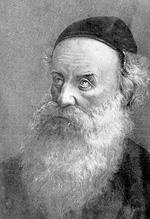

Everyone Could See That the Alter Rebbe Was Different
In honor of 24 Teives we present another chapter from the Sichos Kodesh of the Rebbe Rayatz. * From the sicha of Yud Kislev 5702 in which he spoke about the Mitteler Rebbe and the Alter Rebbe.
Presented by Rabbi Boruch Sholom Cohen
Edited by Y Ben Boruch

As is known, the Alter Rebbe was imprisoned two times. The first time was in the year 5559/1798 and the second time in 5561/1800. The first time was a harsher and more severe imprisonment than the second time.
THE MITTELER REBBE’S TWO ARRESTS
The Mitteler Rebbe was also arrested two times, but in his case it was the opposite in that the first arrest was easier than the second arrest.
The Mitteler Rebbe’s first arrest took place when he was 47 in 5581/1821, and the second arrest was in 5587/1826.
THE MAAMER “ATA ECHAD” THAT WAS SAID IN PRISON
The Mitteler Rebbe would say maamarei Chassidus every year on 9 Kislev (his birthday) even when it was a weekday (since on Shabbos the date was not as relevant).
On Shabbos (Parshas VaYeitzei) 9 Kislev 5587, the Mitteler Rebbe said the maamer “Ata Echad” in the presence of several dozens of Anash, while still in prison. They had received permission beforehand for five minyanim of Chassidim to be present.
THE GEULA OF 9-10 KISLEV
The Mitteler Rebbe’s freedom began on Shabbos, 9 Kislev 5587 when they removed the guards. He was completely released on Sunday, 10 Kislev, when they obtained the papers from the government. There was also a government order that the Rebbe’s family members present a formal request for his release, and after that he was freed. All this transpired on Yud Kislev.
BRINGING THE PAST TO LIFE
In thought, separation due to time and place has no relevancy, since knowledge and imagery can place a person on a true and high level. But the knowledge must be inner knowledge, knowledge according to Chassidus, and after the knowledge one needs to picture the matter. It is through this, i.e. knowledge and imagining, that a person can be placed on a very high level in knowledge of Torah.
HOLY STORY
Even a Chassidic story that injects liveliness into Torah and mitzvos is a holy story, a D’var Torah! Likewise, when you hear a simple person crying out passionately: Oy, I didn’t daven Mincha yet, or Maariv, or when he says “Yehei Shmei Rabba,” then when he says this in sincerity it gives the listener an added enthusiasm in Torah and mitzvos. It also leads a G-d fearing person to shame. The shame is not because of the simple person himself, but because of the tone in which this was said.
THE ELDER CHASSID, R’ AHARON OF LIOZNA
There was a Chassid by the name of R’ Arke Dubrovna. This was R’ Aharon Levin, the rav of Liozna.
The Rebbe Rayatz paused and turned to Rabbi Nissan Telushkin and asked him: Did you know this Chassid? R’ Telushkin said: I think I knew him when he was in Bobruisk.
The Rebbe asked him: In what year did you see him?
R’ Telushkin replied: Around 5660/1900.
It seemed that the Rebbe was uncertain as to whether or not R’ Telushkin had actually seen him.
HE KNEW THE REBBE WAS THERE
R’ Aharon knew that my father was present (i.e. his spiritual stature – Ed.) and he told my father the following:
1) I was born in 5557, the year the Tanya was printed.
2) The (Alter) Rebbe was an awe inspiring man. When you looked at him, you knew he was different than others.
3) I can recall how the (Alter) Rebbe would daven and read the Torah. It was frightening to hear. One would automatically begin to cry.
4) My father told me that he remembered that a family of geonim (geniuses) came to Vitebsk who had fled from Pozna. Among them were a number of very wealthy men. This was the family of the Alter Rebbe, and their grandson R’ Boruch (the father of the Alter Rebbe) was the talmid of the Baal Shem Tov.
5) The talmidim of the Mitteler Rebbe were extraordinary mekusharim. They would come to see the Rebbe and to hear Chassidus from him, and this gave them chayus.
THE REBBE RASHAB VISITS R’ AHARON
The Rebbe Rayatz went on to say: I saw him in Kislev 5659/1898 when I went to Liozna with my father (the Rebbe Rashab) for the wedding of R’ Shneur Zalman Lodzer (of Lodz). He was the son of R’ Leib Schneersohn of Velizh, the son of Rebbetzin Golda the daughter of R’ Boruch Sholom the son of the Tzemach Tzedek.
When we were in Liozna, I went with my father to visit R’ Aharon. He was 102 and very weak. Because of his weakness, he would stop talking every twenty seconds and would say: I need to nod off a bit. Then he would wake up and wash his hands and would continue speaking. His mind was clear, but due to his weakness he was forced to frequently pause his activities and rest.
MEN OF INTELLECT, HEART AND KNOWLEDGE
R’ Aharon went on to say:
The talmidim of the Mitteler Rebbe were unlike the Chassidim of the (Alter) Rebbe. The talmidim of the Alter Rebbe were men of intellect, while the talmidim of the Mitteler Rebbe were men of heart, and those of the Tzemach Tzedek were men of knowledge.
[R’ Telushkin asked the Rebbe Rayatz: Does “baalei lev” (men of heart) mean bina, as in “bina liba” (the heart comprehends)? The Rebbe said yes.]
After saying that the Alter Rebbe’s Chassidim were Baalei Mo’ach – Chochma – and the Chassidim of the Mitteler Rebbe were Baalei Lev – Bina – and the Chassidim of the Tzemach Tzedek were Baalei Dei’a – daas – the Rebbe Rayatz went on to say:
My father told me in the name of his father (the Rebbe Maharash) who said on Yud-Tes Kislev 5640:
The Baal Shem Tov and the Rav HaMaggid are on the level of Kesser of Chassidus. The Baal Shem Tov is the aspect of Atik and the Rav HaMaggid the aspect of Arich Anpin. The Alter Rebbe is the s’fira of Chochma. The Mitteler Rebbe – Bina. My father (the Tzemach Tzedek) – Daas.
THE ESSENCE OF THE POWERS OF THE MIND
My father (the Rebbe Rashab) concluded: Regarding my father (the Rebbe Maharash), the essence of Chabad (the intellectual faculties) shone forth in all of his ten soul powers of Chabad, Chagas, Nhy”m.
The Rebbe Rayatz concluded that he would write down what he heard.
WE CALLED THE REBBE’S ROOM “HEICHAL MOSHIACH”
The Rebbe Rayatz spoke on other occasions about R’ Aharon of Liozna, relating other things he heard from him on that visit in 5559.
In 5559 there was a wedding in Liozna. While we were there, my father (the Rebbe Rashab) visited R’ Aharon Liozner even though they weren’t close. However, since he was man of stature as a rosh yeshiva, my father visited him.
R’ Aharon was extremely old at the time, 98 or some say 108 (later in 5602, the Rebbe is quoted as saying 102, see above). While we were there, R’ Aharon described the rooms of the Alter Rebbe in Liozna. The rooms were in two halves of the house. In the foyer (between the two halves of the house – Ed.) there was an oven. The wall of the oven extended into the room where the Alter Rebbe sat.
In the half of the house on the left lived the Alter Rebbe’s family and in the half of the house on the right there was a room within a room. The Rebbe regularly sat in the inner room and the outer room was a waiting room for those who wanted to see him. There was an attic which also had an inner room and an outer room next to the stairs. There in the attic, the inner room was also the place where the Rebbe sat.
The Chassidim would call the outer room in the attic, Gan Eden HaElyon and the outer room downstairs they called Gan Eden HaTachton. The inner room, where the Alter Rebbe sat, was called, Heichal Moshiach!
During our trip home, my father said about R’ Aharon: That he spoke about this offhandedly, without any excitement, is because he saw an atzmi (someone whose outer being reflected his true G-dly inner essence, i.e. the Alter Rebbe)!
***
The Rebbe Rayatz explained: What my father meant when he said that he saw “atzmi” is like what my father said on Yud-Tes Kislev 5673: Look at me; I have seen “atzmi.”
THE HISTORY OF R’ MOSHE VILENKER
The Rebbe Rayatz in one of his journal entries indicates that he heard biographical details about the life of the Chassid R’ Moshe (Vilenker) from R’ Aharon of Dubrovna (the very same R’ Aharon of Liozna).
HE NEVER USED A MIRROR
R’ Aharon’s father, Boruch, lived in Vitebsk. He once traveled to his father for a wedding that took place there. The wedding was in a large hall and the walls were covered with mirrors. R’ Aharon sat at the head of the table and when he noticed his image in a mirror he asked, “Who is that distinguished Jew sitting over there?” because he had never looked at himself in a mirror.
THE ADVANTAGE OF THIS WORLD
R’ Aharon once said: Here in this world, we can talk about and reach higher levels than in the World to Come.
GO BACK HOME
R’ Aharon, known as R’ Arke Liozner, after finishing everything that had to be done one Erev Pesach morning, went to Lubavitch. When the Tzemach Tzedek heard about this, he instructed him to take a wagon and return to his city that very day.
A WONDER AMONG CHASSIDIM
In Beis Rebbi it says about him:
The well-known Chassid, R’ Aharon of Liozna, was a Chassid of the Tzemach Tzedek who was very mekushar. The Tzemach Tzedek cherished him; the extent of his modesty and piety was wondrous.
After the passing of the Tzemach Tzedek, he became mekushar to his son, the Admur Yehuda Leib of Kopust. Then he was mekushar to the Admur R’ Shneur Zalman of Kopust and would travel to him twice a year, for Rosh HaShana and for Shavuos. He was very dear to the Admur of Kopust who would say about him that in this generation he was a wonder among Chassidim.
During the time of the Tzemach Tzedek’s leadership, R’ Aharon was a Rosh Mesivta in Dubrovna and then in Vitebsk. Then he was a rav in Liozna, and in each of these places his name and memory are recalled with awe.
A few years ago, he left the rabbanus to live with his children in Vitebsk. When he heard about the passing of the Admur of Kopust in 5660, he groaned in sorrow. About nine months later he passed away in Vitebsk, where he is buried.
Beis Moshiach. "Everyone Could See That the Alter Rebbe Was Different." Beis Moshiach, no. 863 (January 3, 2013).